AnyPortrait > 메뉴얼 > 재질 라이브러리
재질 라이브러리
1.1.8
AnyPortrait의 기본적인 렌더링 목표는 "빛이 적용되지 않고 일러스트의 원색을 표현하는 것"입니다.
그렇지만 프로젝트에 따라서 캐릭터가 빛의 영향을 받을 필요도 있으며, 사용자가 작성한 쉐이더(Shader)로 구현된 다양한 효과가 구현될 필요도 있을 것입니다.
AnyPortrait v1.1.7 에 이러한 사용자들의 요구를 충족하기 위한 기능이 추가되었습니다.
"재질 라이브러리 (Material Library)"를 이용하여 다양한 재질을 설정하여 Bake를 할 수 있으며, 재질의 초기값을 설정하는 것도 가능합니다.
또한, 자주 사용되는 "재질 세트 (Material Set)"를 프리셋으로 설정하여, 다른 캐릭터에 쉽게 적용할 수도 있습니다.
재질 라이브러리에서 재질 세트를 만들고 적용하기

Directional Light, Point Light등이 배치되고 Ambient Color가 검은색보다 밝게 설정된 유니티 씬입니다.
이 때, 기본적인 방식으로 Bake된 AnyPortrait로 작성된 캐릭터가 지나치게 밝게 렌더링되는 문제가 발생합니다.
이전에는 이러한 경우 사용자가 작성한 Shader를 일일이 메시에 적용하는 방식으로 문제를 해결해야 했습니다. (관련 페이지)

AnyPortrait 에디터를 엽니다.
(1) 루트 유닛(Root Unit)을 선택합니다.
(2) 에디터 상단에 추가된 Material Library 버튼을 누릅니다.

"재질 라이브러리 (Material Library)" 윈도우가 열립니다.
재질 라이브러리는 "재질 세트 (Material Set)"를 생성하고 변경할 수 있는 기능입니다.
(재질 라이브러리 인터페이스에 대한 자세한 설명은 이 페이지 하단에서 보실 수 있습니다.)
AnyPortrait의 메시들은 조건에 따라 서로 다른 Shader가 적용됩니다.
따라서 여러 개의 Shader를 하나의 그룹으로 묶어서 관리를 해야하는데, 이것을 "재질 세트"로 부릅니다.
어떤 Shader가 적용되는지에 관한 조건은 다음과 같습니다.
- Gamma 또는 Linear 색상 공간
- 클리핑 여부
- 4개의 블렌딩 방식
그리고 클리핑 메시를 위한 Alpha Mask Shader를 포함합니다.

"재질 라이브러리"는 위와 같이 구성됩니다.
(1) 재질 세트 : 현재의 캐릭터에 저장된 재질 세트들이 표시되며, 재질 세트를 생성할 수 있는 버튼이 있습니다.
(2) 프리셋 : 다른 캐릭터에도 적용하기 위해 공통적으로 공유되는 프리셋들이 나타납니다. 프리셋을 생성하거나, 미리 제공된 패키지로부터 프리셋을 만들 수 있는 버튼들이 있습니다.
(3) 재질 세트 속성 : 선택한 재질 세트의 속성들이 있습니다. 이름과 아이콘, Shader들과 재질의 프로퍼티등을 설정할 수 있습니다.
(4) 재질 세트 편집 기능 : 프리셋과 연결하여 값을 동기화하거나 다른 재질세트를 복제하는 기능 등이 제공됩니다.
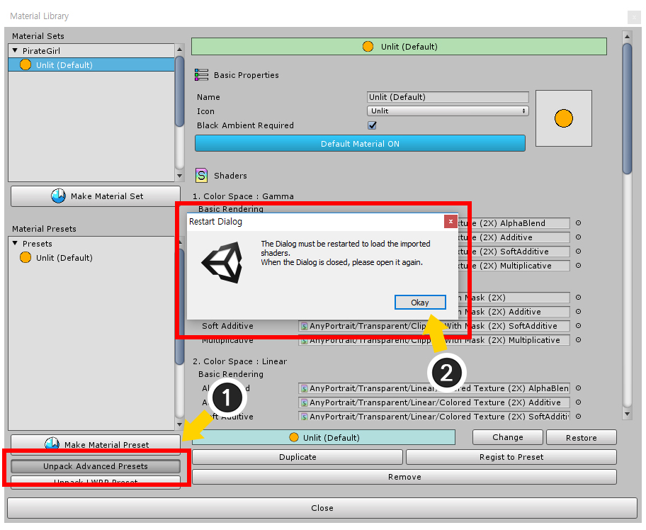
현재는 재질 프리셋이 기본값인 "Unlit"밖에 없습니다.
패키지 형태로 제공되는 재질 세트 프리셋을 설치해봅시다.
(1) Unpack Advanced Presets 버튼을 누릅니다.
(2) 패키지가 설치되면 재질 라이브러리를 다시 시작해야한다는 메시지가 나타납니다.
확인 버튼을 누르면 재질 라이브러리가 종료되고 패키지가 설치됩니다.
설치가 종료되면 다시 재질 라이브러리를 엽니다.
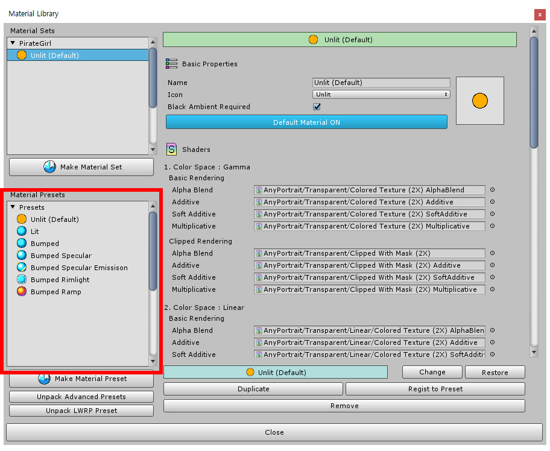
이제 다양한 재질 세트 프리셋들이 설치되었습니다.


v1.1.8에서 프리셋을 선택하는 버튼이 변경되었습니다.
(1) 설치하고자 하는 재질 세트 프리셋을 선택합니다.
(2) Unpack Preset 버튼을 누르면 선택된 프리셋이 설치됩니다.
- LWRP Unlit, LWRP 2D 프리셋에 대한 설명은 관련 페이지를 참고하세요.
- VR 프리셋에 대한 설명은 VR와 관련된 페이지를 참고하세요.
- Keep Alpha 프리셋에 대한 설명은 렌더링 텍스쳐와 관련된 페이지를 참고하세요.
- URP 프리셋에 대한 설명은 관련 페이지를 참고하세요.

이어서, 새로운 재질 세트를 만들어봅시다.
(3) Make Material Set 버튼을 누릅니다.
(4) 재질 세트를 쉽게 만들기 위해서 프리셋을 선택할 수 있습니다. 이 단계에서는 "Lit" 재질 프리셋을 선택해봅시다.

새로운 재질 세트가 생성되었으며, 그 속성들은 "Lit" 프리셋을 기반으로 자동으로 작성됩니다.
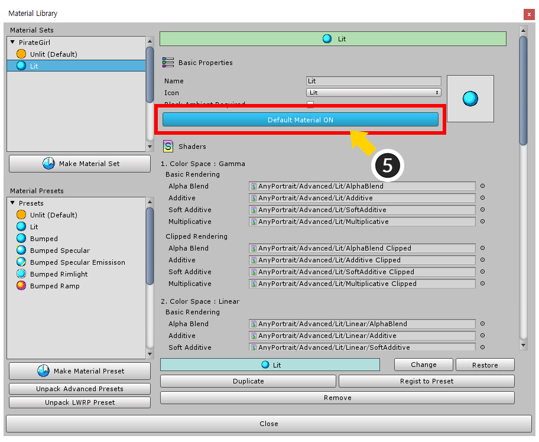
아직 이 재질 세트는 생성만 되었을 뿐, 실제로 적용되지는 않은 상태입니다.
생성된 Lit 재질 세트가 기본값이 되어야 Bake를 했을 때 실제로 적용이 됩니다.
(5) Default Material 버튼을 눌러서 Lit 재질 세트가 기본값이 되도록 설정합니다.

AnyPortrait 에디터에서는 재질에 따른 렌더링을 지원하지 않습니다.
Bake를 하여 유니티 씬에서 어떻게 보여지는지 확인해봅시다.
Bake 다이얼로그를 열고 Bake 버튼을 누릅니다.
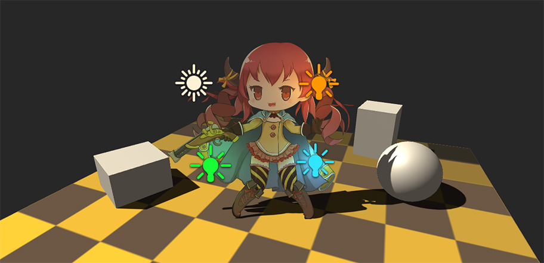
이제 다양한 라이트에 따라서 예쁘게 렌더링되는 캐릭터를 보실 수 있습니다.
재질 프리셋을 이용하여 다양하게 렌더링하기

"Lit 재질 프리셋" 외에도 다양한 재질 프리셋들이 제공됩니다.
이 재질들을 하나씩 이용하여 렌더링을 해봅시다.
(1) 앞서 만든 "Lit" 재질 세트를 선택합니다.
(2) Change 버튼을 누릅니다.
(3) 다른 재질 프리셋을 선택하여 동기화할 수 있습니다. 이번에는 "Bumped"재질을 선택해봅시다.
(4) 선택한 프리셋과 동일하게 되도록 속성들을 모두 변경할 것인지 물어봅니다. 확인 버튼을 누릅니다.

Bumped 재질 프리셋의 속성들과 동일하도록 재질 세트의 값들이 변경되었습니다.
필요한 경우 재질 세트의 이름과 아이콘 등을 수정할 수 있습니다.

Bumped 재질은 노멀맵 (또는 범프맵)을 필요로 합니다.
재질의 프로퍼티에 노멀맵을 입력해주어야 합니다.
(5) 재질 세트 속성 영역을 스크롤하면 아래쪽에 "재질 프로퍼티"들이 있습니다. 여기에 "_BumpMap" 프로퍼티에 노멀맵을 적용해야합니다.
(6) 노멀맵은 일반적으로 푸른색의 텍스쳐로 작성되며, 외부의 툴을 이용하여 사용자가 직접 만들어야 합니다.
참고
이 페이지에서는 노멀맵과 같은 텍스쳐를 제작하는 방식은 다루지 않습니다.
"2D Normal Map"의 키워드로 검색을 하면 다양한 제작 방식들이 소개됩니다.

Lit 재질과 비슷해보이지만, 부피감이 추가된 렌더링 결과물을 보실 수 있습니다.
대부분의 라이팅은 노멀 벡터를 필요로 하므로, 이하의 모든 재질은 Bumped 재질을 기반으로 작성되었습니다.
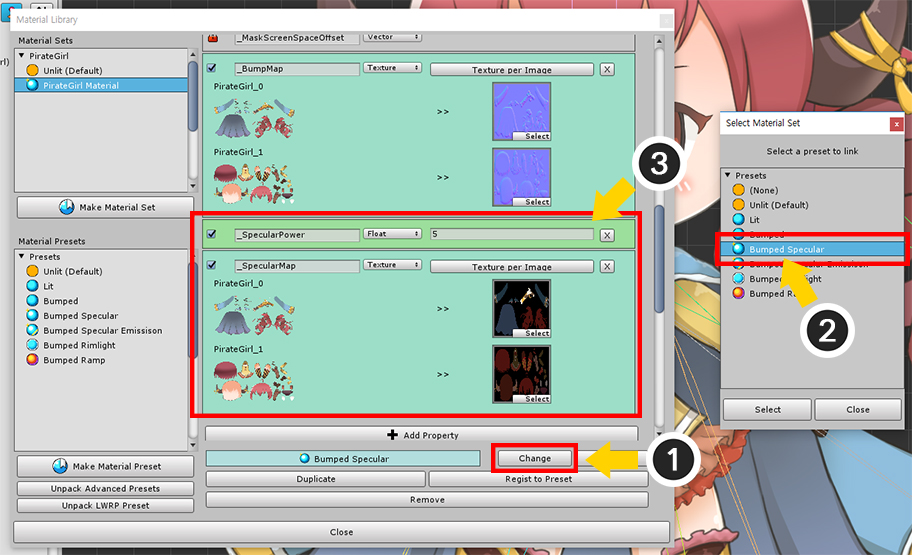
이번에는 "Bumped Specular" 재질을 적용해봅시다.
위에서 설명된 것과 동일한 과정으로 재질을 선택하고 적용하면 됩니다.
(1) Change 버튼을 누릅니다.
(2) Bumped Specular 프리셋을 선택합니다.
(3) 재질 프로퍼티 항목에 "_SpecularPower"와 "_SpecularMap" 프로퍼티가 추가되었습니다.
"_SpecularPower" 프로퍼티는 Specular의 Shininess를 계산하는 제곱수입니다. 숫자가 크면 작고 선명한 반짝임이 나타납니다.
"_SpecularMap" 프로퍼티는 Specular의 계산에 사용될 텍스쳐입니다. 여기에 적용되는 텍스쳐의 RGB 채널은 "더하기 식"으로 적용될 Specular의 색상을 의미하며, Alpha 채널은 _SpecularPower에 곱해질 파라미터를 의미합니다.

이제 재질의 빛의 방향에 따라서 더욱 반짝이는 것을 볼 수 있습니다.
(일반적으로 Specular의 세기는 빛의 방향과 카메라의 방향에 따라서 바뀌는데, AnyPortrait로 작성된 캐릭터는 빌보드 방식으로 동작하므로 아쉽게도 Specular의 효과가 크지 않습니다.)

같은 방식으로 "Bumped Specular Emission" 재질을 적용해보았습니다.
Emission 재질은 자체 발광 효과가 더해지는 것이 특징입니다.
(눈동자와 총, 옷의 금속 재질 부분이 밝게 렌더링된 것을 보실 수 있습니다.)
이 재질에는 다음의 두개의 프로퍼티가 더 추가됩니다.
"_EmissionMap" 프로퍼티는 발광되는 색상(RGB) 정보를 가진 텍스쳐입니다. 렌더링에서는 "더하기 식"으로 적용됩니다.
"_EmissionColor" 프로퍼티는 "_EmissionMap"의 색상에 곱해지는 색상 파라미터입니다.

"Bumped Rimlight" 재질도 꽤 예쁜 렌더링 결과를 보여줍니다.
림 라이트(Rim Light)는 후면으로부터의 반사광을 표현한 기법입니다.
다음의 프로퍼티들이 추가됩니다.
"_RimPower"는 림 라이트 영역의 크기를 설정하는 프로퍼티입니다.
제곱 방식으로 적용되기 때문에, 값이 작을 수록 넓게 나타납니다.
"_RimColor"는 림 라이트의 색상(RGB)입니다. 더하기 식으로 적용됩니다.

"Bumped Ramp" 재질은 가장 특별한 결과를 보여주는 흥미로운 재질입니다.
라이팅되는 방식을 그라디언트 맵(Gradient Map)으로 지정할 수 있습니다.
"_RampMap" 프로퍼티에 그라디언트 맵을 적용합니다.
이 텍스쳐는 이미지마다 지정될 필요가 없기에, 텍스쳐 프로퍼티의 방식이 "Common Texture"인 것을 보실 수 있습니다.

"Bumped Ramp" 재질을 이용하여 꽤 인위적이고 인상적인 렌더링 결과물을 만들 수 있습니다.
커스텀 쉐이더가 적용된 재질 세트 만들기
사용자가 작성한 쉐이더(Shader)를 적용하여 재질을 만들 수 있습니다.
이 페이지에서는 작성된 간단한 이펙트용 쉐이더를 재질 세트에 넣어서 적용해보는 과정을 설명합니다.
(여기서 설명된 쉐이더 에셋은 AnyPortrait 패키지에 포함되지 않습니다.)
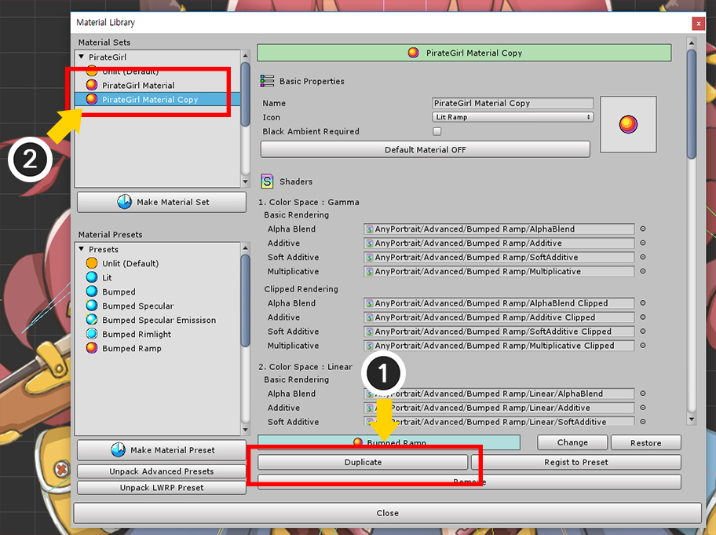
기존의 재질 세트로부터 복제하여 새로운 재질 세트를 만들어봅시다.
(1) 현재 사용 중인 재질 세트를 선택한 후, Duplicate 버튼을 눌러서 재질 세트를 복제합니다.
(2) 리스트에 복제된 재질 세트가 추가되었습니다.
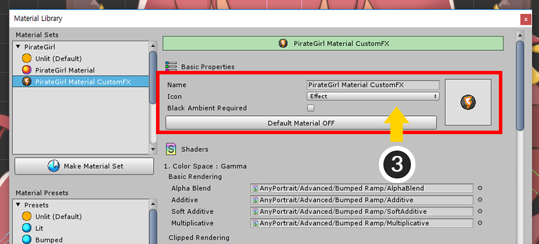
(3) 이름과 아이콘을 설정합니다.

작성한 쉐이더를 재질 세트에 적용합니다.
조건에 따라서 총 16개의 쉐이더들을 각각 만들고 적용해야하는데, 이펙트인 경우 굳이 모든 경우에 대해서 만들 필요는 없습니다.
(4) 작성한 쉐이더를 가장 기본이 되는 "Gamma Color Space / Basic Rendering / Alpha Blend"에 적용합니다.
이 페이지에서 사용된 쉐이더는 다음과 같이 작성되었습니다.
프리셋으로 제공되는 "Bumped Ramp" 재질의 쉐이더에 약간의 코드를 추가한 쉐이더입니다.
Shader "CustomShader/Character FX"
{
Properties
{
_Color("2X Color (RGBA Mul)", Color) = (0.5, 0.5, 0.5, 1.0)
_MainTex("Main Texture (RGBA)", 2D) = "white" {}
_BumpMap("Bump Texture (Normalmap)", 2D) = "bump" {}
_RampMap("Ramp Gradient Map (RGB)", 2D) = "white" {}
_NoiseMap("Gray Noise Map (Gray)", 2D) = "white" {}
_FadeValue("Fade Value (0~1)", Float) = 0
_FadeColor1("Fade Color 1 (RGB)", Color) = (0, 0, 0, 1)
_FadeColor2("Fade Color 2 (RGB)", Color) = (1, 1, 0, 1)
}
SubShader
{
Tags{ "RenderType" = "Transparent" "Queue" = "Transparent" "PreviewType" = "Plane" }
Blend SrcAlpha OneMinusSrcAlpha
LOD 200
CGPROGRAM
#pragma surface surf SimpleColor alpha
#pragma target 3.0
half4 _Color;
sampler2D _MainTex;
sampler2D _BumpMap;
sampler2D _RampMap;
// Custom Code
//--------------------------------
sampler2D _NoiseMap;
float _FadeValue;
half4 _FadeColor1;
half4 _FadeColor2;
//--------------------------------
struct Input
{
float2 uv_MainTex;
float2 uv_BumpMap;
float4 color : COLOR;
};
half4 LightingSimpleColor(SurfaceOutput s, half3 lightDir, half atten)
{
half4 c;
half nl = max(0, dot(s.Normal, lightDir));
half halfDiff = (nl * 0.5f) + 0.5f;
half3 rampColor = tex2D(_RampMap, float2(halfDiff, 0.5f)).rgb;
c.rgb = saturate(s.Albedo * _LightColor0.rgb * (rampColor * atten));
c.rgb + s.Emission;
c.a = s.Alpha;
return c;
}
void surf(Input IN, inout SurfaceOutput o)
{
half4 c = tex2D(_MainTex, IN.uv_MainTex);
c.rgb *= _Color.rgb * 2.0f;
o.Alpha = c.a * _Color.a;
o.Albedo = c.rgb;
o.Normal = UnpackNormal(tex2D(_BumpMap, IN.uv_BumpMap));
// Custom Code
//---------------------------------------------------
o.Emission = half4(0, 0, 0, 0);
half noise = tex2D(_NoiseMap, IN.uv_MainTex).r;
if (noise < _FadeValue - 0.03f)
{
o.Alpha = 0.0f;
}
half smoothFade = (noise - _FadeValue) / 0.6f;
if (noise < _FadeValue)
{
o.Emission = _FadeColor2.rgb;
}
else if (noise < _FadeValue + 0.6f)
{
o.Albedo = (o.Albedo * _FadeColor1.rgb) * (1.0f - smoothFade) + o.Albedo * smoothFade;
}
//---------------------------------------------------
}
ENDCG
}
}
이 쉐이더 코드에 맞게 프로퍼티를 설정해봅시다.
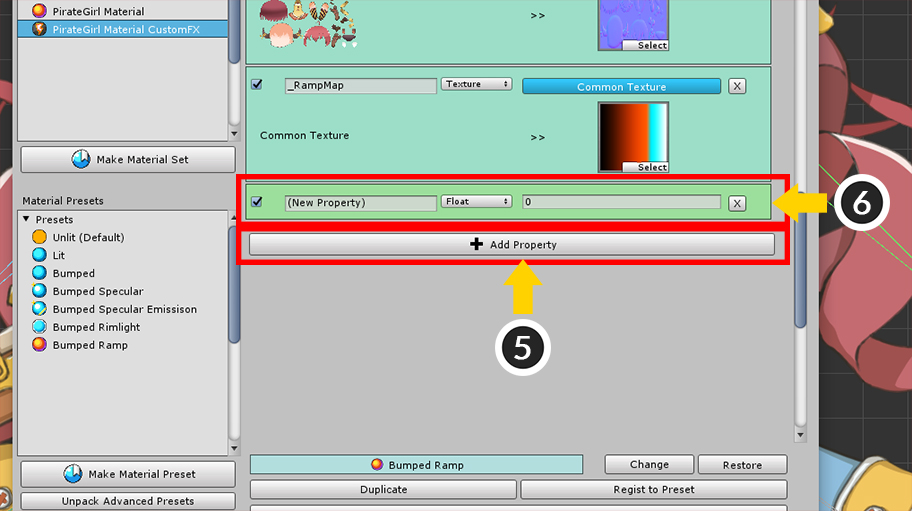
(5) Add Property 버튼을 누릅니다.
(6) 새로운 프로퍼티가 추가된 것을 볼 수 있습니다.

(7) 프로퍼티의 이름을 "_NoiseMap"으로 설정하고, "Texture" 타입으로 변경합니다.
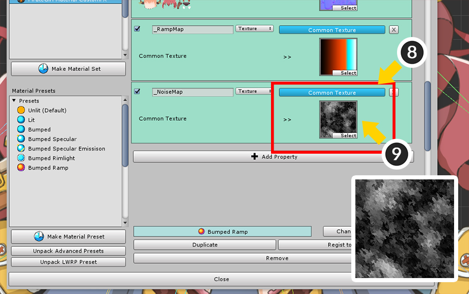
(8) 이 텍스쳐는 이미지에 관계없이 공통으로 적용되어야 하므로, "Common Texture" 방식으로 변경합니다.
(9) 효과를 위해 제작된 노이즈 텍스쳐를 적용합니다.

(10) 같은 방식으로 Float 타입의 "_FloatValue", Color 타입의 "_FadeColor1"과 "_FadeColor2" 프로퍼티를 추가합니다.
추가된 프로퍼티에 적절한 값들을 설정합니다.

이 재질 세트를 렌더링에 적용해봅시다.
(11) 재질의 Default Material 설정을 ON으로 변경하고 Bake를 합니다.

캐릭터가 사라지거나 나타나는 효과를 볼 수 있습니다.
다른 스크립트를 이용하여 "_FadeValue"를 제어하면 애니메이션되는 효과를 만들 수 있습니다.
구현 방법은 아래의 예시를 참고해보시면 좋습니다.
아래의 예시는 다음과 같이 구동됩니다.
- A키와 S키를 누르면 fadeValue 변수가 서서히 증가되거나 감소됩니다.
- SetMeshCustomFloatAll 함수를 이용하여 재질의 "_FadeValue" 프로퍼티의 값을 fadeValue 값으로 갱신합니다.
(함수에 대한 자세한 설명은 관련 페이지를 참고하세요.)
using UnityEngine;
using AnyPortrait;
public class CharacterFadeTester : MonoBehaviour
{
public apPortrait portrait;
public float fadeValue = 0.5f;
void Update ()
{
if ( Input.GetKey(KeyCode.A) )
{
fadeValue -= Time.deltaTime * 0.5f;
portrait.SetMeshCustomFloatAll(fadeValue, "_FadeValue");
}
if ( Input.GetKey(KeyCode.S) )
{
fadeValue += Time.deltaTime * 0.5f;
portrait.SetMeshCustomFloatAll(fadeValue, "_FadeValue");
}
}
}
이 페이지에서 설명된 모든 재질들을 동영상으로 보실 수 있습니다.
또한, 이 페이지에서 설명된 텍스쳐는 아래와 같습니다.
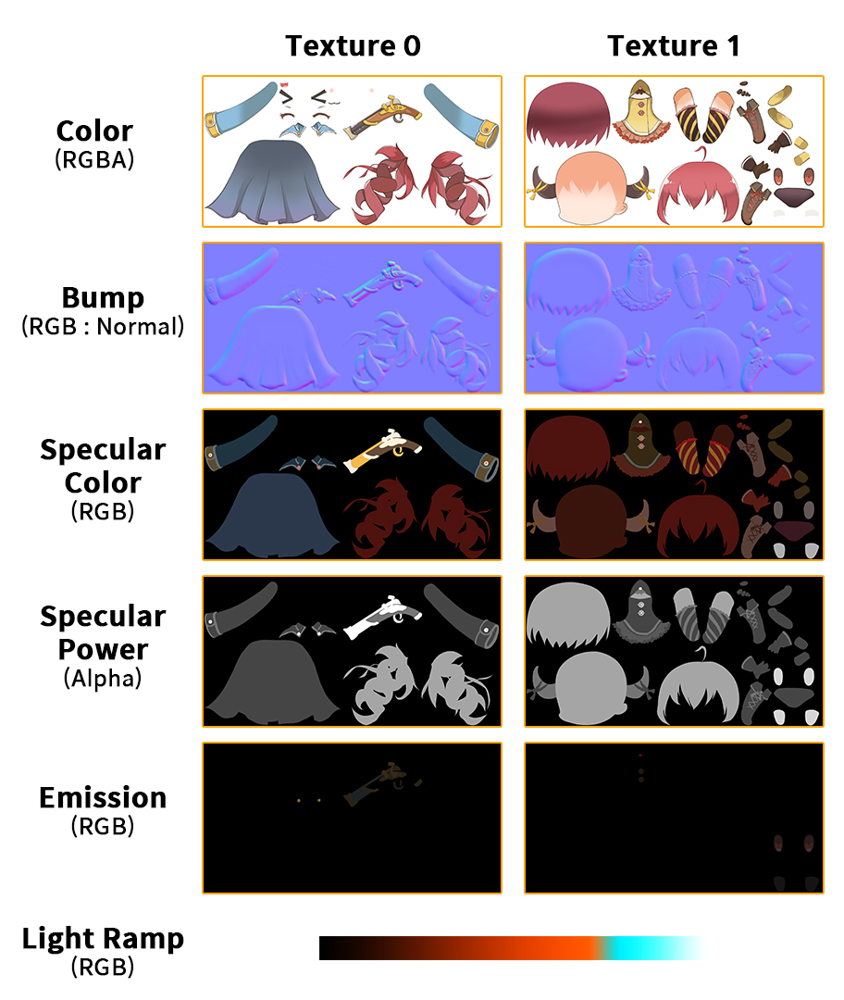
프리셋으로 저장하기

작성한 재질 세트를 프리셋으로 만들어두면, 다른 캐릭터에도 빠르게 재질을 적용할 수 있습니다.
(1) 프리셋으로 저장하고자 하는 재질 세트를 선택합니다.
(2) Register as a Preset 버튼을 누릅니다.
(3) 재질 세트가 프리셋으로 복사되어 등록된 것을 볼 수 있습니다.
일부의 메시만 다른 재질 세트를 적용하기

메시를 선택하여 기본값이 아닌 다른 재질 세트를 적용할 수 있습니다.
(1) 메시 그룹을 선택합니다.
(2) Setting 탭을 선택합니다.
(3) 대상이 되는 메시를 선택합니다.
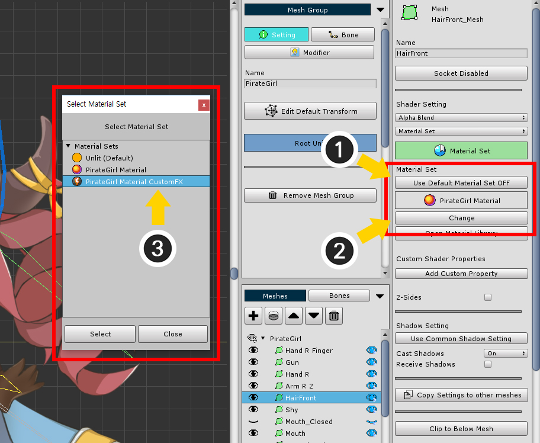
(1) Use Default Material Set 버튼을 눌러서 OFF 상태로 변경합니다.
(2) Change 버튼을 누릅니다.
(3) 적용하고자 하는 재질 세트를 선택하고 Select 버튼을 누릅니다.
이 단계까지 설정하면 재질 세트가 적용이 됩니다.
만약 이 메시에 대해서 재질 세트의 프로퍼티를 다르게 적용하고 싶다면 다음의 단계까지 수행하시면 됩니다.

(1) Add Custom Property 버튼을 누릅니다.
새로운 커스텀 프로퍼티가 추가되었습니다.
이 프로퍼티는 재질 세트나 커스텀 쉐이더의 설정에 관계없이 유니티 씬에서 적용됩니다.
(재질 세트의 프로퍼티 설정보다 우선시 됩니다.)

(2) 프로퍼티의 이름과 타입, 값을 설정합니다.
여기서는 앞서 설정과 같이 Color 타입의 "_FadeColor1"으로 설정했습니다.

같은 방식으로 "_FadeColor2" 프로퍼티도 추가했습니다.
재질 세트의 설정과 다른 색상으로 설정했으므로 다르게 렌더링 될 것입니다.
아마도 재질 설정을 다른 메시에도 동일하게 적용할 필요가 있을 것입니다.
다음의 설명을 확인해보세요.
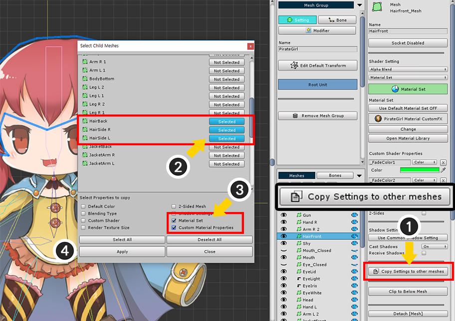
(1) Copy Settings to other meshes 버튼을 누릅니다.
이 기능은 메시의 설정을 다른 메시로 복사하는 기능이며, 재질 설정을 포함하여 다양한 설정들을 선택적으로 복사할 수 있습니다.
(2) 설정이 복사될 메시들을 선택합니다.
(3) 여기서는 재질 설정과 커스텀 프로퍼티를 복사하고자 하므로 Material Set과 Custom Material Properties를 체크합니다.
(4) Apply 버튼을 누릅니다.
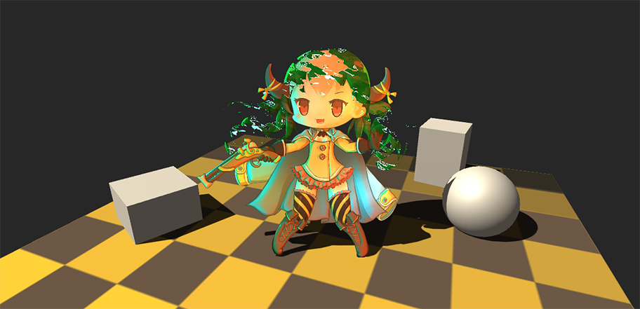
Bake를 하고 유니티 씬에서 렌더링 결과를 확인해보면, 선택된 메시만 재질이 다르게 적용된 것을 볼 수 있습니다.
재질 라이브러리 인터페이스

1. 재질 세트 리스트
: 캐릭터에 적용할 수 있는 재질 세트들과 재질 세트를 생성할 수 있는 Make Material Set 버튼이 있습니다.
2. 프리셋 리스트
: 재질 세트 프리셋들이 있습니다. 프리셋을 생성하는 버튼들이 있습니다.
- Make Material Preset : 새로운 프리셋을 생성합니다.
- Unpack Advanced Presets : 위에서 소개된 다양한 재질이 포함된 패키지를 설치하여 프리셋들을 추가합니다.
- Unpack LWRP Preset : Lightweight Render Pipeline(LWRP)용 재질 1종이 포함된 패키지를 설치합니다.
3. 재질 편집 기능
: 선택된 재질 세트를 편집하는 기능들입니다.
- 연결된 프리셋과 Change, Restore : 이 재질 세트가 프리셋이 아니라면 프리셋과 연동할 수 있습니다. Change 버튼을 눌러서 다른 프리셋을 선택하여 연결할 수 있으며, Restore 버튼을 눌러서 프리셋과 동일한 값을 가지도록 동기화할 수 있습니다.
- Duplicate : 선택된 재질 세트를 복제합니다.
- Register as a Preset : 이 재질 세트를 프리셋으로 등록합니다.
- Remove : 이 재질 세트를 삭제합니다. 기본값인 "Unlit" 프리셋은 삭제할 수 없습니다.
1. 이름, 아이콘, Ambient 색상
: 재질 세트의 이름과 아이콘 타입입니다. 이 재질 세트가 "검은색의 Ambient"를 필요로 한다고 체크하면, Bake시 Ambient 색상에 따라 안내 메시지가 나타납니다.
2. 아이콘 이미지
3. Default Material 설정
: 재질 세트를 기본값으로 설정하면, 별도의 설정이 없는 모든 메시에 자동으로 이 재질 세트가 적용됩니다.
4. 쉐이더 에셋들
: 색상 공간, 클리핑 여부, 블렌딩 타입에 따라 상세하게 어떤 쉐이더 에셋을 적용할지 설정합니다.
5. 예약된 쉐이더 프로퍼티
: AnyPortrait에서 사용하는 4개의 프로퍼티들입니다. 이 프로퍼티는 사용자가 제어할 수 없습니다.
6. 이미지별로 지정된 텍스쳐 프로퍼티
: 이미지마다 각각의 텍스쳐를 설정할 수 있습니다. Texture per Image 버튼을 눌러서 변경할 수 있습니다.
7. 공통 텍스쳐 프로퍼티
: 이미지에 관계없이 1개의 텍스쳐를 프로퍼티로 지정합니다. Common Texture 버튼을 눌러서 변경할 수 있습니다.
8. Float, Int, Vector, Color 타입의 프로퍼티
: 텍스쳐가 아닌 타입의 프로퍼티입니다. 왼쪽부터 다음과 같은 요소들이 있습니다.
- 활성/비활성 체크박스 : 이 체크박스를 끄면 Bake에 적용되지 않습니다.
- 이름 : 프로퍼티의 이름이며, 동일한 이름이 쉐이더에 있어야 적용됩니다.
- 타입 : 프로퍼티의 타입입니다. Float, Int, Vector, Color, Texture 타입을 지원합니다.
- 값 : 프로퍼티의 값입니다.
- 삭제 버튼 : 프로퍼티를 삭제합니다.
9. Add Property
: 프로퍼티를 추가합니다.
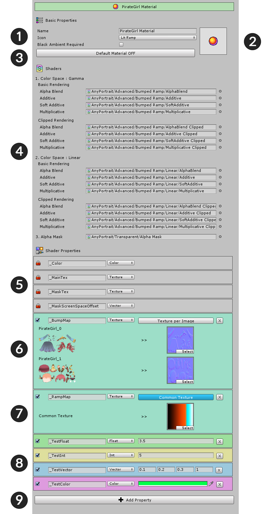